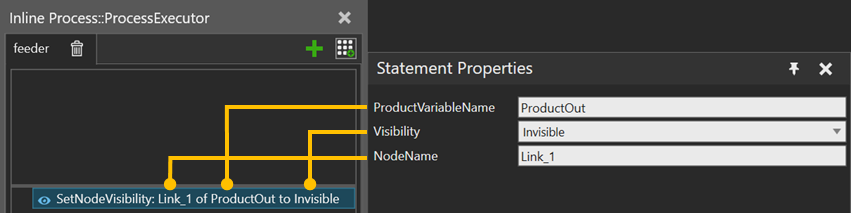

A SetNodeVisibility statement allows you to show or hide a node of a component of the Product instance. The node is indentified by its name defined by the NodeName variable. If no NodeName is given, the root node of the component is shown or hidden.

| Name | Description |
| ProductVariableName | Name of the Process variable where to get the Product instances. |
| Visiblity | Mode to set the visibility of the node. You can choose between Toggle, Visible or Invisible. Toggle Visible Invisible |
NodeName |
Name of the affected node. Leave empty to change the component’s root node. |